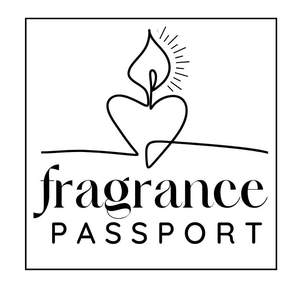

Trade Mark Journal No.2025/013 28 March 2025
UK00004171244 10 March 2025 (3,4)

- Class 3
- Massage candles for cosmetic purposes; Bath bombs; Bath salts; Bath soap; Bubble bath; Bath beads; Bath soaps; Bath powder; Bath oil; Cosmetic bath salts; Shower and bath foam; Bath and shower foam; Bubble bath preparations; Bath and shower preparations; Shower and bath preparations; Preparations for use in the bath or shower; Preparations for the bath and shower; Bath oils; Bath flakes; Bath foam; Liquid bath soaps; Foams for the bath; Shower and bath gel; Bath and shower gel; Liquid soap used in foot bath; Bath pearls; Bath milk; Non-medicated bath salts; Bath herbs; Bubble baths; Bath preparations; Preparations for the bath; Bubble bath [for cosmetic use]; Bath and shower oils [non-medicated]; Cosmetic preparations for bath and shower; Foam bath preparations; Foaming bath gels; Foaming bath liquids; Liquid soap used in foot baths; Bubble bath preparations [for cosmetic use]; Bath crystals (Non-medicated -); Non-medicated bubble bath preparations; Bath lotions (Non-medicated -); Bath soak for cosmetic use; Non-medicated bath oils; Bath oils (Non-medicated -); Aromatic oils for the bath; Bath foams (Non-medicated -); Bath gels (Non-medicated -); Scented wax melts; Wax melts [fragrancing preparations]; Soaps; Scented soaps; Loofah soaps; Perfumed soaps; Soaps and gels; Soap; Aloe soaps; Carbolic soaps; Laundry soaps; Non-medicated soaps; Cosmetic soaps; Cream soaps; Almond soaps; Soap products; Facial soaps; Liquid soaps; Hand soaps; Handmade soap; Granulated soaps; Non-medicated toilet soaps; Perfumed soap; Liquid soaps for laundry; Soap (Antiperspirant -); Aloe soap; Sponges impregnated with soaps; Cosmetic soap; Shower soap; Bars of soap; Beauty soap; Skin soap; Hand soap; Soaps for toilet purposes; Toilet soap; Liquid bath soap; Soaps for body care; Waterless soap; Soaps in gel form; Liquid soap; Granulated soap; Sugar soap; Bar soap; Body soap; Soaps for personal use; Soaps in liquid form; Shampoos; Body cream soap; Aromatherapy lotions; Liquid soaps for hands and face; Scented body lotions and creams; Moisturising creams, lotions and gels; Cleansing lotions; Bath lotion; Cosmetic creams and lotions; Massage oils and lotions; Non-medicated lotions; Scented body lotions; Bath creams.
- Class 4
- Candles; Candles and wicks for candles for lighting; Tealight candles; Votive candles; Scented candles; Candles for use as nightlights; Nightlights [candles]; Candles for lighting; Fragranced candles; Candles and wicks for lighting; Candles in tins; Candle torches; Perfumed candles; Candles (Perfumed -); Soy candles; Christmas lights [candles]; Candles for use in the decoration of cakes; Table candles; Tea light candles; Church candles; Floating candles; Fruit candles; Aromatherapy fragrance candles; Candles for night lights; Musk scented candles; Tealights; Grave candles, non-electric; Christmas tree decorations for illumination [candles]; Bougies in the nature of wax candles; Candles (Christmas tree -); Christmas tree candles; Wicks for lighting; Special occasion candles; Wax lights; Tea lights; Candles containing insect repellent.
GABRIELLA SHILLINGFORD